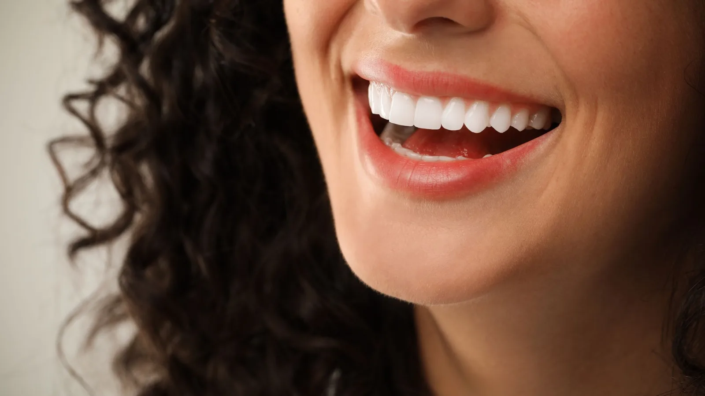

Cosmetic Dentistry
A considered option, not an impulse.
A porcelain veneer is a thin facing bonded to the front of a tooth. It can change the colour, shape, alignment or proportion of a tooth, and is generally used on the teeth that show when you smile.
It is also irreversible. Preparing a tooth for a porcelain veneer means permanently removing some enamel, and enamel does not grow back. From that point the tooth will always need something on it. That is not a reason to avoid veneers, but it is a reason to be certain before starting.
Dr Meg’s approach is to make sure you understand exactly what is being removed, what the likely lifespan is, and what happens when the veneer eventually needs replacing — and to tell you honestly if she thinks a simpler option would serve you better.

What might be achieved
Veneers are used to address deep or stubborn discolouration, chips and worn edges, teeth that are small or unevenly shaped, minor gaps, and mild irregularity in alignment.
They are not orthodontics. Where teeth are significantly out of alignment, moving them is often the better and more conservative answer than covering them, even though it takes longer.
More conservative alternatives
Before recommending veneers, Dr Meg will go through the options that involve removing less tooth structure — repairing a chip with composite bonding, treating gum inflammation so the gum line settles, or orthodontic movement. Sometimes one of these achieves what you were after. Sometimes the answer is that nothing needs doing.
Health comes first
Active decay and gum disease are treated before cosmetic work goes ahead. A veneer on an unhealthy tooth is a short-term result.
Grinding is also assessed, because heavy grinding will chip porcelain. Where you grind, a night guard is generally part of the plan rather than an optional extra.
The process
Treatment starts with a consultation and a discussion of what you want to change, with photographs and a scan. Shape, shade and proportion are planned with you rather than decided for you.
At the preparation appointment the teeth are shaped under local anaesthetic, a digital scan taken and temporaries fitted. The veneers are made by a dental technician, then tried in, checked and bonded.
Realistic expectations
Results vary between people. Existing tooth shade, gum position, bite, lip line and the shape of your face all affect what is achievable. Dr Meg will show you what is realistic for your mouth. The most common cause of an obviously artificial result is going several shades brighter than the face around it, and she will give you her honest opinion on that.
Frequently asked questions
Preparation removes some enamel permanently, and the tooth will need a restoration from then on. That is the trade-off, and it is discussed fully before you commit.
It varies with the material, your bite, whether you grind and how you care for them. Porcelain is durable but can chip, and veneers are not permanent. No dentist can put an honest figure on an individual case.
They should not. Shade, shape and translucency are chosen with you and layered by a technician. A natural result comes from choosing a shade that suits your face rather than the brightest available.
Brush and clean between the teeth as you normally would, and keep your check-ups. Porcelain edges chip on hard things, so ice, nut shells and fingernails are worth avoiding. If you grind, wearing your night guard is part of protecting them.
It depends on which teeth show when you smile and what you want to change. Sometimes one or two. Dr Meg will not recommend a full set as a default.
That is a perfectly reasonable outcome of a consultation, and there is no pressure here either way.